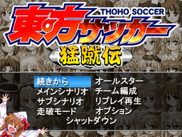

- Welcome to Touhou Wiki!
- Please register to edit. For assistance, check in with our Discord server or IRC channel.
Touhou Soccer Moushuuden
Touhou Soccer Moushuuden | |
|---|---|
|
 | |
| Developer |
Hachimitsu Kuma-san |
| Publisher |
Hachimitsu Kuma-san |
| Released |
December 31, 2006 |
| Genre |
Sport Game |
| Gameplay |
Single-player Sub-Scenario and Campaign mode, Two Player versus Mode |
| Platforms | |
| Requirements |
1.6 GHz Processor, 512 MB RAM, DirectX 9.0b, 2 GB Hard Drive Space, Radeon9200/GeForce 5200 AGP, RadeonX300/GeForce 6200 PCI-E |
Touhou Soccer Moushuuden (東方サッカー猛蹴伝, lit. "Touhou Soccer Tales of Fierce Kick") is Touhou Project fangame that's a stand-alone expansion to Touhou Soccer that adds various new features to the original game. It includes the original game's Main Scenario mode, and adds sub-scenarios for a number of characters in which you can unlock new moves. It also features Campaign Mode, a 25-game mode focused on building your own team by buying players and items; and All-Star Mode, where you can play exhibition matches against the AI or other players.
Name[edit]
Due to the choice of using the word soccer (サッカー sakkaa), it is incorrect to use the word football (フットボール futtobo-ru) that's used in British English, which would say Touhou Football Moushuuden.
Gameplay[edit]
- See Gameplay
Story[edit]
Music[edit]
Fandom[edit]
- This game provides hilarity among fans for several reasons. First of all, several players' shots don't reflect their abilities from the original Touhou Project and that it looks like they could destroy the stadium and kill the audience. Mima's Twilight Spark, in particular, looks more like Armageddon than a soccer shot. Eirin Yagokoro destroys the Apollo 13 space station during her shot of the same name, while Youmu Konpaku carves the name of her attack on the Moon before cleaving the Moon in half, all for no apparent reason, not to mention there are very few shots that actually involve kicking the ball.
- There are debates on how a seemingly normal soccer ball can withstand so much punishment (10,000 rapid blade strikes by Flandre Scarlet for example, all within 1 sec). General consensus is that the ball has been imbued with the Hourai Elixir or that the ball is in fact the Yin-Yang Orb.